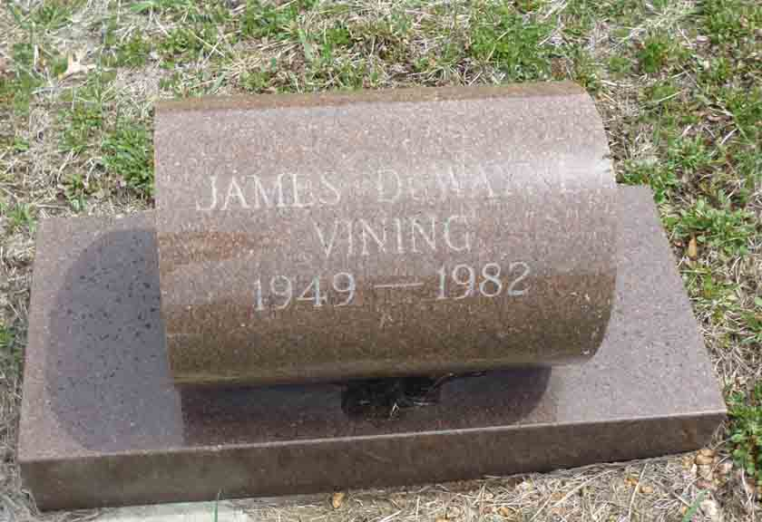

Documentation for James DuWayne Vining - (1) [...] Gozinski, (2) [...] Berry
Death Data
Gravestone for James DuWayne Vining, in Saint James Catholic Cemetery, Neshkoro, Marquette County, Wisconsin (from Find A Grave):
